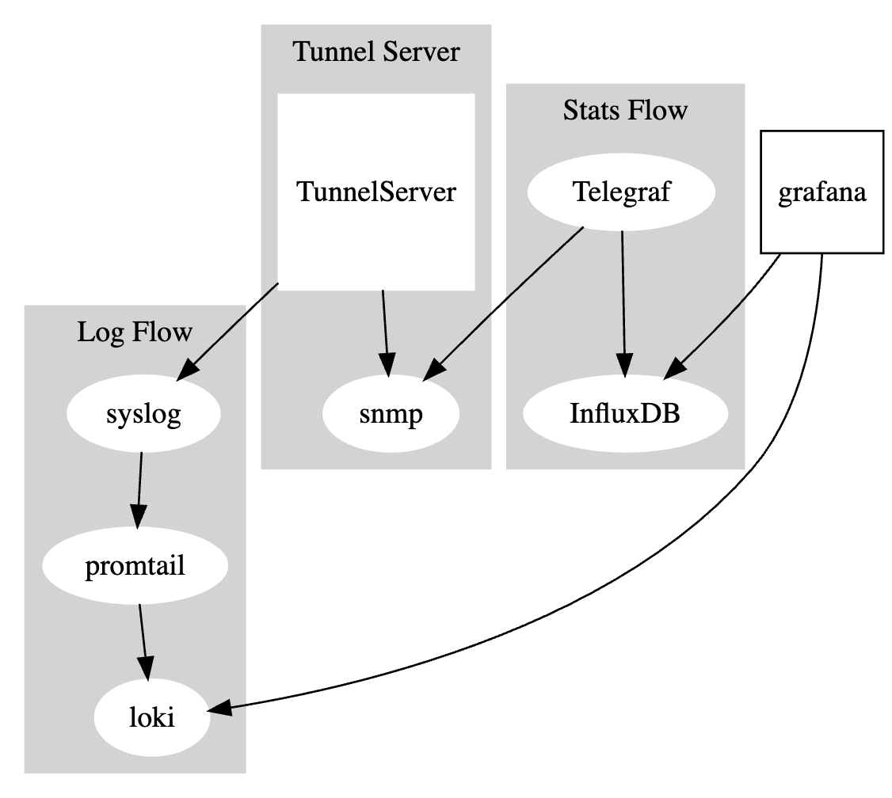
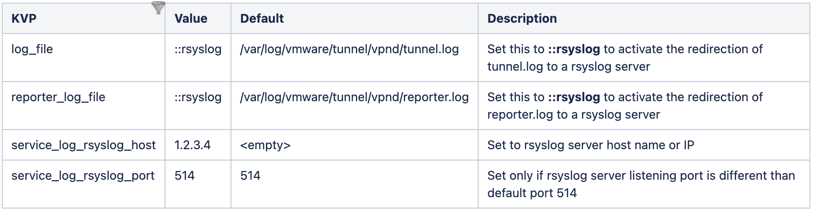
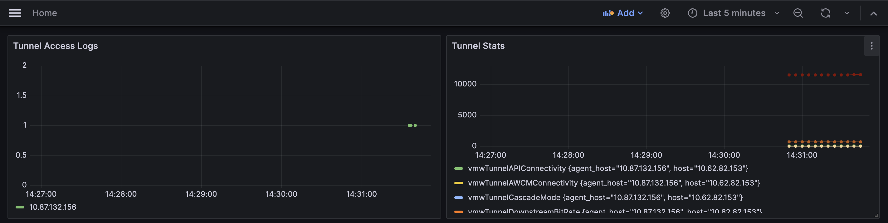

Overview
This repo can be used as a recommendation for guidance on setting up observability for tunnel server and other WS1 components.
Tunnel
Architecture

Pre-reqs
- Tunnel is configured on the Workspace ONE UEM Console. Follow the existing stems to configure syslog in the console and enable snmp (if using UAG).
- Tunnel Server deployed via UAG or container.
- All connectivity should be working as expected.
Logging and Telemetry
Set Up
- Deploy Linux VM
- Chose distribution of your choice, though Alma Linux is recommended for use. You can also choose to download here
- Resource recommendation of Linux VM 4 core 16GB 100 GB storage
- Retention policy
- For Logs, 7 days of data is retained.
- Ensure, docker and docker-compose is installed on Linux VM. Run
docker versionto confirm the same. - Start docker using
systemctl start docker
- Chose distribution of your choice, though Alma Linux is recommended for use. You can also choose to download here
- If log storage is local, create a user
lokiwhere loki would write logs locally to, though it is not recommended to be used in production. - Clone the repo on Linux VM OR download to your local,zip the entire repo and transfer it to VM.
- Login to VM
- Go to directory where repo is cloned or unzip it if zipped.
- open .env file in this directory and fill in the below information
TELEGRAF_HOST=<LINUX VM IP>
INFLUXDB_HOST=<LINUX VM IP>
INFLUXDB_PORT=8086
DOCKER_INFLUXDB_INIT_MODE=setup
DOCKER_INFLUXDB_INIT_USERNAME=<INFLUXDB USERNAME>
DOCKER_INFLUXDB_INIT_PASSWORD=<INFLUXDB PASSWORD>
DOCKER_INFLUXDB_INIT_ORG=snmp
DOCKER_INFLUXDB_INIT_BUCKET=metrics
DOCKER_INFLUXDB_INIT_ADMIN_TOKEN=metrics
GRAFANA_PORT=3000
GRAFANA_URL=<LINUX VM IP> --> Not required if customer have their own Grafana Instance.
GRAFANA_USER=<GRAFANA USERNAME>
GRAFANA_PASSWORD=<GRAFANA PASSWORD>
GRAFANA_PLUGINS_ENABLED=true
GRAFANA_PLUGINS=grafana-piechart-panel
# Define as "udp://<hostname_or_ip1>:161,udp://<hostname_or_ip2>:161,udp://<hostname_or_ip3>:161"
SNMP_SERVERS=<TUNNEL SERVER IPS IN ABOVE FORMAT>- Run :
setup.sh with:
tunall: if all components need to run
tunall-sys: if everything except syslog needs to be deployed
tunall-sys-gra: if everthing except syslog and grafana needs to be deployed - If setup script above is run with mode tunall-sys, Make sure to make your syslog server forward logs to the Linux VM. Example syslog.conf
destination d_loki {
syslog("<LINUX VM IP>" transport("tcp") port("1514"));
};
log {
source(s_local);
source(s_network);
destination(d_loki);
};- If setup script above is run with mode tunall-sys-gra, apart from redirecting syslog logs as shown above, customer should add two datasources, loki(for logs) and influxdb(for metrics) retrieval. Refer this to configure datasource and this to see how to explore and view logs and metrics in your own grafana instance.
- Open any browser on your local OR any machine which has connectivity to the Linux VM and type
http://<linux-vm-ip>:3000or use your existing Grafana instance.- You can view the logs and stats here.
Configuration (for Application and Access Logs)
- Configure syslog (Linux VM IP or URL/hostname) on UEM Console and save the configuration.
- This will make tunnel server send access logs to observability stack. Assumption is the syslog server runs on port 514.
- For application (tunnel server) logs, additional KVP settings can be configured. Starting Tunnel Server version 23.12, use below KVP to redirect tunnel application and reporter logs to syslog.
- udp port 514 is supported.

Configuration (for Telemetry)
- Tunnel Server container already exposes port 161 for snmp stats.
- In UAG, enable snmp following guide here.
- Only snmp v2 is supported.
- Update
SNMP_SERVERSsection in .env to supply Tunnel Server IPs in the formatudp://<hostname_or_ip1>:161for Observability stack to pull the snmp stats.
Tests
- Enroll a device and try accessing any tunnel’ed resource from any enrolled device.
- You should start seeing the logs and stats
http://<linux-vm-ip>:3000

Demo
Setup
Setup

Dashboard

Other WS1 Components
Architecture

Logging and Telemetry
Set Up
- Deploy Linux VM
- Chose distribution of your choice, though Alma Linux is recommended for use. You can also choose to download here
- Resource recommendation of Linux VM 4 core 16GB 100 GB storage
- Retention policy
- For Logs, 7 days of data is retained.
- Ensure, docker and docker-compose is installed on Linux VM. Run
docker versionto confirm the same. - Start docker using
systemctl start docker
- Chose distribution of your choice, though Alma Linux is recommended for use. You can also choose to download here
- If log storage is local, create a user
lokiwhere loki would write logs locally to, though it is not recommended to be used in production. - Clone the repo on Linux VM OR download to your local,zip the entire repo and transfer it to VM.
- Login to VM
- Go to directory where repo is cloned or unzip it if zipped.
- open .env and change the
GRAFANA_URL=<LINUX VM IP>with the actual VM IP. - Run
setup.sh ws1allwhich will deploy Loki, Prometheus and Grafana. - You can use the Loki URL to send logs from your product to the observability stack and use the prometheus remote write url to send out telemetry.
- Open any browser on your local OR any machine which has connectivity to the Linux VM and type
http://<linux-vm-ip>:3000.- You can view the logs and stats here.
Further Notes
setup.sh script talks about option tunall-sys-gra, where Grafana won't be deployed.